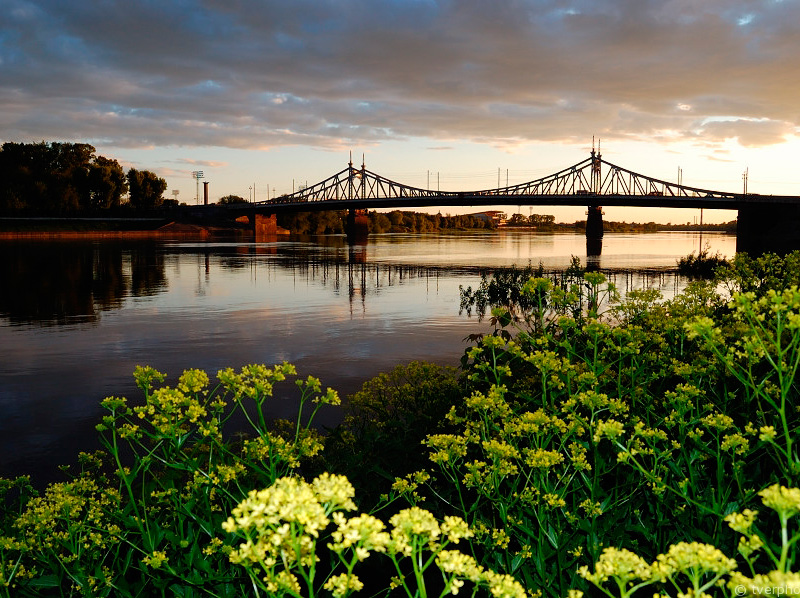
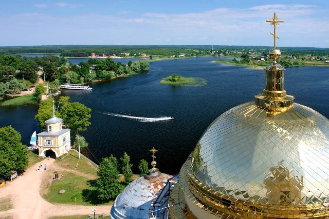
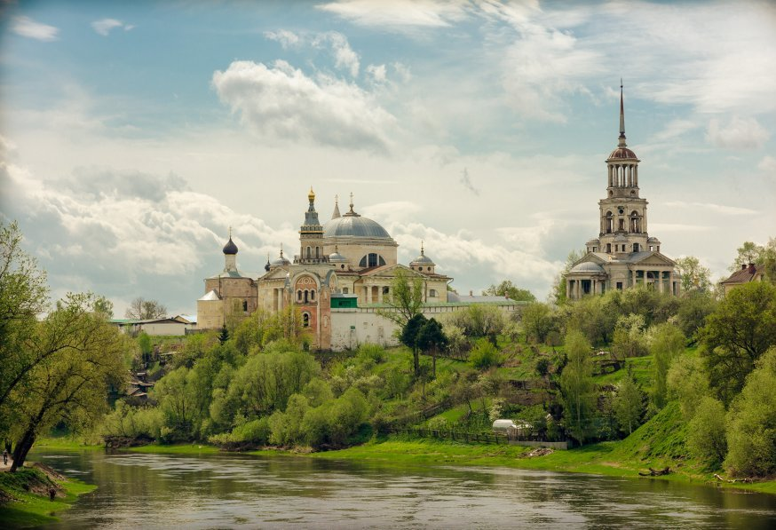

Тверь – Осташков – Торжок
Трехдневная программа по городам тверской области
Тверь
 Обзорная экскурсия по городу с осмотром исторического центра.Наше колоритное путешествие в красавицу - Тверь начинается со знакомства с этим невероятным, сказочным городом! Тверь - изумительный русский город с неповторимым колоритом, в котором творили талантливейшие итальянцы, украшая суровый облик северного города своими солнечными шедеврами. Недаром великая императрица России Екатерина II считала Тверь самым красивым городом России, конечно, после Петербурга. Вас ждет знакомство с уникальной 3-х лучевой системой застройки города - «Версальским трезубцем», повторяющей планировку Санкт-Петербурга, Версаля и Рима. Вы полюбуетесь уникальными памятниками архитектуры ХVI-XVIII веков: Собором Белая Троица, Императорским Путевым Дворцом, купеческими усадьбами и особняками и увидите памятник знаменитому путешественнику и «прародителю» всех тверских брендов Афанасию Никитину - купцу и путешественнику XV в., первому европейцу, посетившему сухопутным путем Индию. Памятниками: И.А. Крылову, А.С. Пушкину, М.Я. Тверскому; М. Кругу, красивейшей набережной Степана Разина, прекрасными площадями, словно нанизанными на главную улицу города и, конечно, познакомитесь одним из символов Твери – Старым Волжским кружевным мостом». Вы узнаете, почему Новый мост старше Старого моста, как появилось выражение «Филькина грамота», как Петр I строил мост в Твери и много других тайн и легенд. Посещение музея «РЕМЕСЛА РОССИИ» Здесь ребята узнают, где зародился и бережно хранится традиционный старейший вид русского золотного шитья, как умелые мастерицы делают такие уникальные рукоделия. А также ребята увидят уникальные изделия народных художественных промыслов разных уголков России!
Осташков
 Жемчужина Селигера.Знакомство с историей древнего Осташкова – удивительная возможность припасть к истокам самой могучей матушки-России. Осташков - уютный провинциальный городок, расположившийся на берегу знаменитого озера: тихие улочки, деревянные дома, бескрайние просторы Селигера создают неповторимый колорит. Словно легендарный град Китеж, поднимаются из воды строения Нилово-Столбенской пустыни - одной из знаменитых русских православных святынь. Монах-отшельник Нил Столобный прославился своими чудесными видениями, благими делами и великим постничеством. По завещанию Нила Столобенского, после смерти на месте аскетической землянки преподобного был возведен величественный монастырь. Нас ждет экскурсия по монастырю «Тайны Ниловой Пустыни». Монастырь открыт для посещения многочисленных экскурсантов и паломников. Можно посетить храм, приложиться к мощам преподобного Нила Столобенского, подняться на колокольню, откуда открывается удивительная панорама озера, островов, деревень и храмов по берегам.
Торжок
 Обзорная экскурсия по старинному русскому городу.Своими роскошными живописными видами и завораживающими перспективами реки Тверцы город Торжок и его окрестности по праву заслужили название «Русской Италии». Ажурные колокольни и многочисленные купола храмов придают городу уникальный колорит и ими можно любоваться бесконечно! Жемчужина древних достопримечательностей Торжка - Борисоглебский монастырь - величественное монументальное сооружение, «парящее» над живописным берегом Тверцы. Спасо-Преображенский собор – творение великого зодчего Росси, красивейшие Михайло-Архангельская и Благовещенская церкви, ансамблем Воскресенского девичьего монастыря и многое другое.